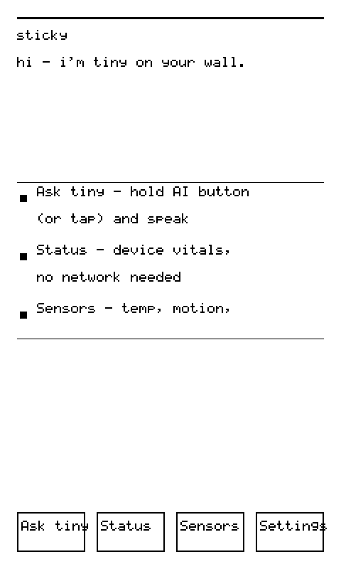
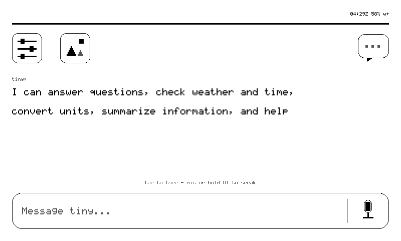

stickyOS — the local shell (M10)·
The Sticky is not just a remote-controlled panel: it has a local shell — pages, navigation, a settings app, an on-e-ink keyboard — that works with the network gone. The card renderer is the view layer; pages are local card specs with local tap handlers. Navigation never touches the network — that is the phone feel.
The pages·
home → status → sensors → settings → (ring wraps)
├─ wifi (scan · join with on-eink keyboard)
└─ bluetooth (scan-only)
| page | what it shows |
|---|---|
| home | the agent UI (0.20.0, M-A9A — an owner design session made this law: "the home screen MUST be the agent UI"): a bespoke agent_home card — gear top-left, chats bubble with unread count top-right (88 px targets), a conversation canvas holding the greeting or the last answer (the streaming typer writes onto card_id=home directly), and a bottom "Message tiny…" input bar with a mic zone. Region ids reuse the existing touch-router vocabulary (settings / m:inbox / type / speak) so the routing layer didn't change — the shell now only supplies data. (The pre-0.20.0 home was an app grid: Ask tiny · Status · Sensors · Settings — the four roots survive as the page ring itself.) Stream-on-home shipped (0.22.0, on glass — status receipt 05fda343; graduated from the claim that stood here): the ask lives on the home surface. Voice tap repaints home (( listening )) before capture, (( thinking )) after upload — no separate mic box. SSE tokens stream into home's own canvas with tail-follow (newest words always visible, … names the trim), the caret is renderer-owned at the text tail, and the final frame is home with the answer resident. A backend card finale is suppressed-with-log on this path — the owner's directive outranks the card, but the suppression leaves evidence. Re-beginning on an empty home stream skips the double wipe (one less flash on a panel where every flash is visible). The keyboard remains its own page; its submit returns to a home that streams. |
| status | fw, Wi-Fi/SSID/RSSI, heap, battery — same data as the status verb |
| sensors | SHT40, IMU orientation, RTC, battery gauge — live I²C reads, tap Refresh to re-read |
| settings | device identity, network, firmware — with a button bar: Wi-Fi · Bluetooth · Back · Home |
| wifi | scan results as a tappable menu (RSSI notes, results cached 60 s, Rescan to force) → join flow with the on-e-ink keyboard card (shift/backspace/space/cancel/ok) |
| bluetooth | nearby BLE devices (name, address, RSSI) via a NimBLE observer — scan-only honesty: the firmware can see devices, not pair with them, and the page says so instead of implying more |
Input model·
| gesture | action |
|---|---|
| UP / DOWN buttons | the scroll wheel when the card overflows (⅔-view steps, clamped — no fall-through past the edge); cycle the page ring only when the card fits |
| vertical swipe | scrolls an overflowing body — rotation-aware and natural-direction, measured in panel coords and resolved against the current orientation |
| horizontal swipe (0.14.17) | page turn — left = next, right = prev, on the same page ring the buttons cycle. Classified in logical space (only the display knows which axis is which after rotation), ≥80 px so a sloppy diagonal scroll doesn't flip pages, and a draft outranks a gesture — horizontal over the composer is refused rather than eating unsent words. The ring cycles the four roots only (home → status → sensors → settings); wifi/bluetooth are drill pages a tap opens — since 0.16.5, after the batch-#4 P0 traced to the ring modulus swallowing them (see troubleshooting). On a pushed card the directions split (0.16.7, R-7 — verified on glass by relay probe): mid-content right pops to the parent — phone muscle memory, and a one-thumb target the 48 px left band can't be while walking (P-1); the pop path brings up no radio, so the batch-#4 crash family stays unreachable. Mid-content left stays an announced dead-end (double blip, nothing moves) — "forward" from a drilled place has nowhere to go, and saying so beats pretending. On ≤0.16.6 both directions are the dead-end. Note the pop is to the stack parent — wherever the card was pushed from (a page wifi sent over the relay while on home pops back to home, not to settings) |
| edge-band nav (0.16.4, VERIFIED-ON-GLASS batch #5 on 0.16.5) | one spatial rule, no modes — an edge origin marks nav intent (bands are layout-space: last 56 rows, first 48 columns; travel ≥120 px, ≥2× dominant axis). Bottom band + up = HOME from anywhere (on the keyboard = cancel, routed so each composer keeps its own exit: wifi → list, compose → thread, ask → home); left band + right = BACK — pops a pushed card, ring-prev at a ring root. The accept blip fires before the render (on e-ink the ack must be felt before it can be seen); a recognized-but-refused gesture double-blips; below thresholds = silence. During a streaming answer the stream owns the display: every gesture gets one blip and is discarded — the one exit is the physical long-press-AI abort. Verified with screenshots: G1 (settings → bottom-band ↑ → home, 4.6% pixel diff vs home baseline) and G2 (pushed card → left-band → home) both accepted in verdict batch #5 — the same rule that FAILED on 0.16.2 when the verdict ran two images behind the code, which is why the badge waited for receipts instead of trusting the tree |
| AI button, single press | ask tiny (voice) |
| AI button, long-press | home key — from anywhere |
| turn the device | the UI turns with it — IMU auto-rotate commits only after the accelerometer settles (a visible ~600 ms e-ink refresh must never chase a wobble); rotate 0|90|180|270 holds an orientation against gravity, rotate auto releases it. FIXED (63566f0, delivered 0.14.23, owner-confirmed on hardware 2026-08-26 ~02:09Z: "it worked! now the upsite down problem is solved"). It really was a constant 180° in all four orientations — classify() was calibrated off raw-panel axis comments while sticky_display rotates the framebuffer 180° on every push. Do not "fix" the table in tiny_orient.cpp back; the ten-line comment there says why. The follow-on bug is fixed too: rotate report used to set rotation to 0/manual because it fell through to a setter where atoi("report") is 0 (0.15.1, proven on glass) |
| tap | page-owned regions handled locally; anything else goes upstream as ui_tap |
| UP+DOWN held 1 s | the unlock chord — the only local input a pocket-locked device answers. Lockout (§11, 0.17.x) closes everything else: touch discarded at the router, AI press/hold refused with a felt double-blip and again at capture entry, mic dead. Entry is manual (lock verb) or automatic — face-down 3 s, or walking 5 s + 30 s no input; using it while carrying never locks you out. A/B receipts: Commands → lock/unlock |
Navigation is a stack: open() pushes, back pops, the bottom is always home.
Since 0.14.21 every title bar carries a right-aligned glance cluster, completed in 0.18.0: time · battery · Wi-Fi · dmN unread count (only when > 0) · [L] (only when locked) — where each part earns its place or is omitted: the clock only when SNTP has actually synced, and Z-suffixed until the open timezone question is answered (an unlabeled wrong-zone clock is a lie); battery only when the BQ27220 gauge answers; w+/w- always, because on a pocket device w- is the load-bearing state — it says "answers may be stale." The honest limit — e-ink persistence means the cluster is only as fresh as the last render — got its remedy in 0.18.0: the glance verb redraws the cached card through the partial path (no flash, no network), and lock-engage flips [L] into the strip the same way. The battery-budgeted periodic strip refresh stays on the debt list; glance is on-demand by design.
Overflowing bodies (text/list/kv/menu taller than the body box) scroll with a right-edge track+thumb scrollbar, drawn in partial refresh; a menu shows up to 24 items and unstages off-window rows, because an invisible button must not be tappable. The whole model is probe-readable without a finger via the scroll verb.
Seen on glass: portrait mode·

Captured with the screenshot verb while the device stood on its side (fw 0.13.1, IMU auto-rotate). And here is the coordinate invariant made visible — the raw framebuffer of the same moment stays in panel space, sideways to a human but exactly the coordinate system tap <x> <y> speaks:

The parity rule·
Every tappable path has a relay twin — page home|status|sensors|settings|wifi|ble|back|next|prev — so the agent (and the dashboard) can walk the same UI a finger can, and each reply carries the resulting card_id as the commit receipt. Nothing is finger-only; nothing is agent-only.
Provenance discipline·
A recurring theme you'll find in the journal: a field must be right about its own provenance.
- the clock: RTC→system at boot, SNTP→system→RTC on Wi-Fi-up (a background task keeps waiting off the boot path, 20×15 s, so a slow first exchange still ends at
clock_source:"sntp"); UTC by convention - the gyro is really read (powered up ~110 ms, sampled, powered down) — not a cached zero
- a gauge that didn't answer reports
null, neverfalse— "not charging" is a claim - every new card layout gets screenshotted on real glass before its gate closes
Messages on the glass·
The owner's tiny.technology DMs render on the panel: an inbox (threads + unread counts), thread views, and notification pushes. Since 0.14.7 the messages app lives in firmware: tap the inbox, and the device fetches with its own token over /api/devices/messages, parses, and paints — no owner-side process in the loop. The footer states its evidence: "4 conversations - 2 unread - tap a row". A thread opens on the newest message — measured, not asserted: the scroll receipt reads offset 576/576, and the footer says "newest 6 loaded - swipe". The whole path got an independent re-verification on the 0.18.x line (ux-owner verdict batch #14, on glass): real 4-thread inbox rendered, Turkish glyphs holding in production DMs, a measured-bbox tap drilling into a live thread card, and three unread surfaces agreeing — heartbeat badge, inbox rows, thread footer, one number.
Since 0.14.11 the glass also composes: a thread's reply button (m:c:<login> — pure UI, no network) hands off to the e-ink keyboard, and its ok sends with the device token, then re-opens the thread — the reply appearing in the conversation IS the receipt, no separate toast. Failure paints an honest send failed card, because a swallowed 4xx after typing on e-ink at 2 keys/sec is the cruelest possible bug. One boundary still held: the first real send goes to a recipient the owner names, not a test string to a real person — a surface that can speak as you enters service by decision, not by default.
The mechanism is deliberately stateless: a thread row's button id is its destination (m:t:<login>, inbox is m:inbox) — the destination travels in the id, so no card needs to remember what is on the glass. Which is why 0.14.17's sweep fix matters here more than anywhere: a clipped login is not a truncated string, it is a wrong recipient. Three id producers had never been sized to the 48-byte contract they feed; all are now sized and checked, and on overflow the affordance is omitted or refused — no [Reply] button beats one aimed at the wrong human, and a send receipt that would show somebody else's thread stays missing while the send itself still returns its honest ESP_OK. A sibling of that principle shipped in 0.14.20's HEAD repair: a char body[128] had shadowed the body parameter — the user's draft — in the send-error path; -Werror=shadow refused the build, correctly, because the one thing that card must never do is confuse the error text with the text that failed to send. The touch worker sees the m: namespace and calls the fetch — which is also why that worker's stack is 12 KB, not 4: opening a conversation does a TLS handshake, a JSON parse, and a full card render on that stack, and mbedtls is the hungry part. (A prediction this page made earlier died honestly: this was expected to be "grammar v2" work. It shipped as grammar v1 — ordinary menu/list cards plus an id namespace turned out to be enough. The grammar grows when a card must look different, not when it must mean different.)
The badge costs nothing. The unread count rides the heartbeat the device already sends (wantUnread:"1", a string — the zod lesson), so the badge has no poll of its own. Home shows "Mail — n unread" with keep-last-on-absent semantics: a reply that omits the field keeps the last known number, and -1 ("never told") renders nothing rather than a lying zero. The e-ink discipline is the point: home re-renders only when the number changes while home is on glass — one refresh per change, zero per beat.
The feature's first form was an owner-side pusher (tiny_inbox.py, still useful as the notification path), and its design rules carried over intact:
- Provenance is declared. Anything sent from the glass goes as the owner but marked "via sticky" — the agent/device sent it, not the owner's thumb. (This rule outlived its own plumbing: it began as an owner-side
viaTinyflag when device tokens couldn't touch messages at all; the platform then grew the device-token rail and kept the marking.) - The read receipt is sacred. Fetching a thread marks it read platform-wide (that's the phone badge). A thread is only fetched when a human taps its row on the device; polling and the heartbeat badge use read-only forms.
- Names survive the panel. Since 0.14.15 (on glass in 0.14.16) the renderer runs fold v2: a real UTF-8 codepoint decoder with a three-tier fold — a symbol table for the status glyphs agent prose uses daily (✓ ⚠ → ± ×), a systematic Latin-1 + Latin-Extended-A diacritic strip via packed range tables (é ñ ß Š ž readable), and emoji/CJK honestly folded to
?(refined in 0.16.8/R-4: emoji are tone, not content — stripped along with their plumbing (VS16, ZWJ, keycap) so "Hey! 👋" reads "Hey!" instead of the different sentence "Hey! ?"; CJK/unknown scripts keep?because there position matters; status glyphs ✓ ⚠ ✅ ❌ sit inside emoji ranges but the symbol table folds them first, so[ok]/[!]/[x]still render). Turkish input rendered transliterated — "Çağatay" as "Cagatay" — until the extended-glyph bank landed; since 0.16.x it renders as written, and that claim is made below under this paragraph's own evidence rule. This line has been corrected twice, and the chain is worth keeping: the 0.14.15 commit said "Turkish set preserved" (it meant the transliteration mappings survived the v2 rewrite); this page amplified that into "renders as written"; a torture card then measured "Cagatay soyle" on glass; the first retraction blamed the font lookup; and a source-read finally settled it — the fold itself transliterates, deliberately, because the vendored font had ASCII glyphs only — at the time there were no ç pixels to draw. The claim lived in prose while the behavior lived in tables. True ç-pixels are a font-asset task, with the torture card as its regression fixture — the owner's name is the flagship case. The fix (first built as 0.14.19) implements exactly that: an extended font bank at 0x80–0x8B with 12 hand-drawn 5×7 glyphs (çğıöşü ÇĞİÖŞÜ — ı is i minus its dot bit; the cedilla is a 5-tall body plus a tail; breve and umlaut live on row 0), and akCpFoldstable that maps those twelve codepoints to the bank before the range tables run, so é still folds to e untouched. Compile-verified pre-push (sha0f6ef35b). This paragraph has been wrong twice about this exact sentence — so it committed to saying "renders as written" only when the torture card passes on the physical panel, and not one iteration sooner. That pass exists: on 0.16.8-m14 (fw_commit4dd7fcf7) the docs lane rendered the torture card over the relay and pulled the panel's own screenshot — "Çağatay çğıöşü ÇĞİÖŞÜ" renders with true cedillas, breves, dotless-ı and umlauts, while é ñ Š ž fold to their base letters and ✓ folds to[ok], exactly per design (receipt, 800×480 2-bit panel capture, 2026-08-26). The owner's name renders as written. It replaced a 22-entry byte-sequence allowlist, and malformed UTF-8 (truncated sequence, stray continuation byte) degrades to?without desyncing the decoder. The review that shipped it caught its own Ext-A row-alignment bug (Ĵ/Ł/Š/Ž shifted two slots) before the glass ever saw it. - Human strings get defused — at both layers. The shell's
action_for()substring-matches button strings to local actions — a correspondent named "Noble" or a message saying "sorun var" could silently pressrescan ble/ open the mic, while still reporting the tap. Pushers defuse human-authored labels, and since 0.14.6 the firmware only sniffs the label when a card gave no explicitid— a card that names its buttons has already said what they are. (Firmware's own bare-string buttons —Wi-Fi,Back,Home— keep working, which is exactly the case the sniff exists for.)
{kind=link}
The design language: physics first·
Every failed UI idea on this project failed the same way — pretending the panel is an LCD. The working ideas all schedule around the panel. The latency budget, written on the wall:
| event | budget | mechanism |
|---|---|---|
| tap acknowledged | < 50 ms | buzzer — audio is the fast lane |
| tap visually confirmed | 300–500 ms | partial refresh, region-sized |
| page change | 1–2 s | full refresh (the metronome) |
| relay verb round-trip | 5–15 s | poll cadence + agent turn |
| ask with tools | 10–60 s | backend agent loop |
The principle underneath: on e-ink, UI is a series of commitments, not a stream of frames. A phone UI animates toward a state; the Sticky declares states. That's why double-tap and drag were rejected in the touch audit — they're promises the panel can't keep. The shell only ships input verbs the panel can keep: tap, long-press, buttons, orientation — and time (cards that age gracefully).
Two more commitments already kept structurally:
- Local-only zones — the keyboard's keystrokes are consumed by the shell and never posted upstream; only the outcome (joined the network, or didn't) leaves the device. A Wi-Fi password typed on the glass exists nowhere else.
- A pocket companion, not a place — this bullet used to read the other way ("bolted to a room"), and the owner's directive reversed it: the Sticky is carried. That single word re-priced the whole feature queue — §11 pocket lockout became safety-critical (an AI-button hold against fabric is an accidental mic recording), battery became the product, and glanceability became the killer interaction. The latency contract is still glanceable, not interactive-first — that part survives the reframe, because a pocket rewards it even harder than a wall did.
Where this is heading (direction, not shipped): a focus model where remote cards request the glass instead of seizing it, long-poll to replace the 5 s cadence, and IMU wake-on-lift gating the radio. The full thinking lives in THINKING.md.